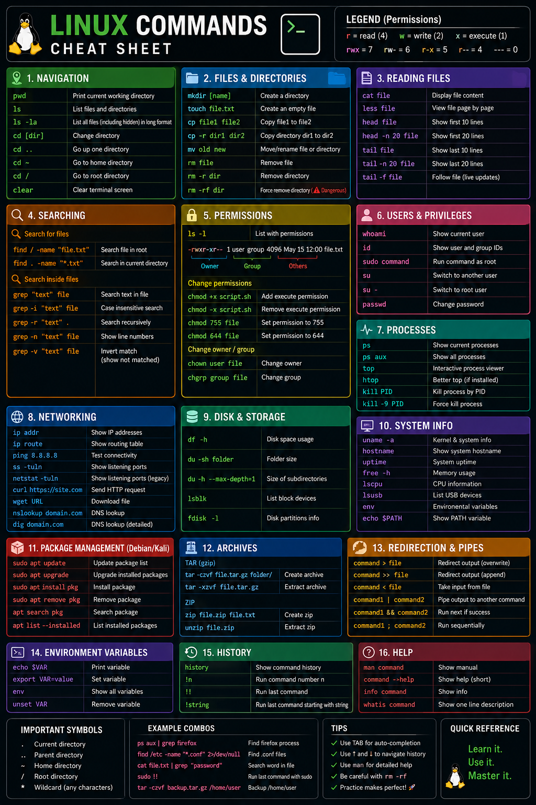
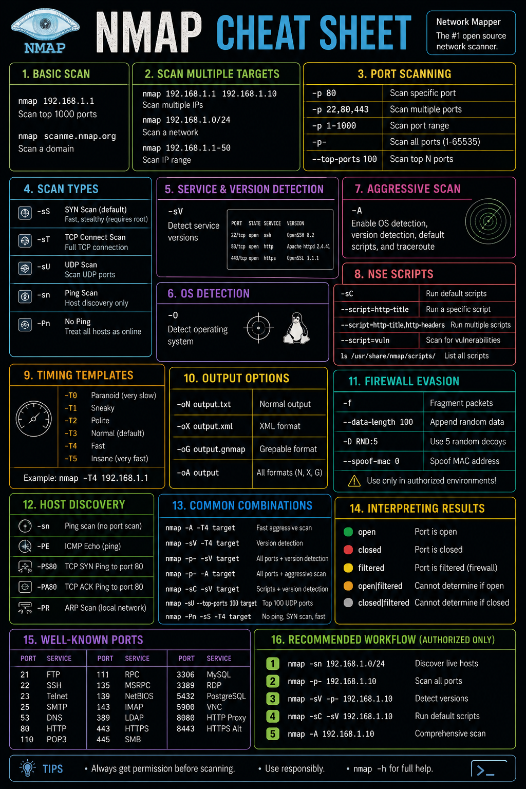

Linux Commands Cheat Sheet
Navigation, files, permissions, users, processes, networking, packages, archives and other command-line references.
Open full sheet →Reference material, practical notes and quick-reference sheets for Linux and security-related command-line work.

Navigation, files, permissions, users, processes, networking, packages, archives and other command-line references.
Open full sheet →
Quick reference for Nmap scanning options, scan types, service detection, output and result interpretation.
Open full sheet →A personal command/reference note containing listening, interactive-shell, security-tool and network-testing notes.
Open notes file →